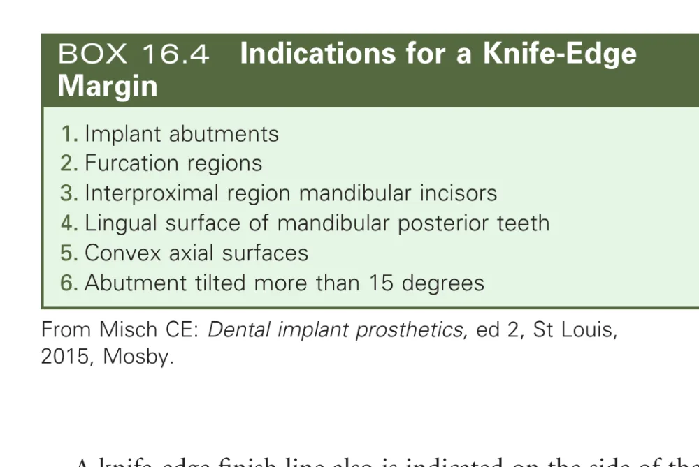
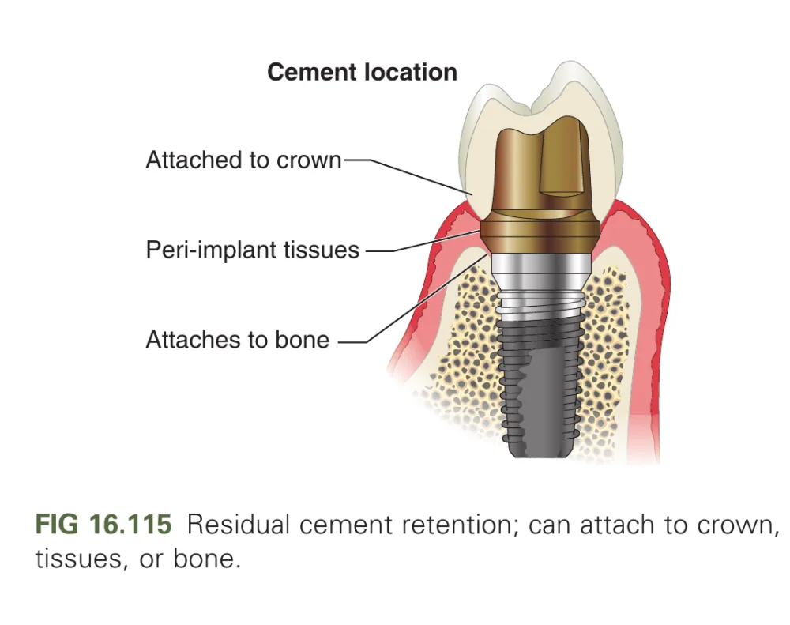

نسخه استخراجشده؛ ترجمه یا تأیید علمی انجام نشده است. وضعیت: captured
اندیکاسیونهای مارجین سابجینجیوال بهشدت محدودند:
«اندیکاسیونهای مارجین سابجینجیوال که برای دندانها توصیف شده، میتواند برای ایمپلنتها اقتباس شود و تنها به دو دلیل اندیکاسیون دارد: افزایش گیر و زیبایی. مزایای مارجینهای سوپراجینجیوال، کاربردشان را روی ایمپلنتها در اکثریت موقعیتهای بیرون از نواحی زیبایی پیشنهاد میکند.»
و یک اشتباه رایج که خودِ قطعه به آن دامن میزند:
«اغلب پزشکان از اباتمنتهای پیشساخته با فِلِر از پیش ساختهشده استفاده میکنند. این به احتمال زیاد ۱ میلیمتر بالای اتصال بدنهی ایمپلنت است، که اغلب نزدیک کرست استخوان است — و نتیجهاش یک مارجین عمیقاً سابجینجیوال است.»
یعنی مارجین عمیق اغلب یک تصمیم نیست؛ یک پیامد است. پزشک اباتمنت استاندارد را میگذارد و فِلِر آن، عمق مارجین را دیکته میکند.
و قاعدهی عددی:
«مارجین سابجینجیوال برای دندان یا ایمپلنت نباید بیش از ۱٫۵ میلیمتر زیر مارجین لثهی آزاد پیش رود — حتی در ناحیهی اینترپروگزیمال.»
و یک محاسبهی هشداردهنده: «وقتی بافتها ۲٫۵ میلیمتر ضخامت (یا بیشتر) دارند، فِلِر اباتمنت اپیکالتر از محل مارجین تاج است.»
این را دو بار بخوان: در بافت ضخیم، اباتمنت استاندارد شما را به مارجینی میبرد که عمیقتر از حد مجاز است — و در درس بعد میبینی که در مارجینهای عمیقتر از ۱٫۵ میلیمتر، برداشتن کامل سمان تقریباً ناممکن است.
و اکنون نوع مارجین. اینجا یک استدلال هوشمندانه هست:
«اباتمنتهای ایمپلنت یک اندیکاسیون رایج برای حداقل کاهش مارجین اباتمنت هستند، چون معمولاً قطر کمتری از یک دندان طبیعی تراشخورده برای تاج دارند (۵ میلیمتر یا کمتر). کاهش قطر اباتمنت برای فراهم کردن جا برای پرسلن یا یک مارجین بِوِلدار، سطح را برای گیر باز هم کمتر میکند.»
و چرا اصلاً لازم نیست؟ «فضای اضافی برای فلز و پرسلن در ناحیهی مارجینها معمولاً لازم نیست، چون ایمپلنت از پیش قطر کوچکتری از جنبهی سرویکال دندان دارد و حجم کافی برای مواد ترمیمی موجود است.» — یعنی همان باریکی که یک ضعف بود، اینجا یک مزیت میشود.
و کادر ۱۶٫۴ — شش اندیکاسیون مارجین لبهچاقویی:
به مورد نخست دقت کن: اباتمنت ایمپلنت خودش سرِ فهرست است. یعنی لبهچاقویی روی ایمپلنت یک استثنا نیست — یک اندیکاسیون رایج است.
و توضیح مورد ششم: «یک خط پایانی لبهچاقویی همچنین در سمتی از ایمپلنت یا اباتمنت طبیعی که بیش از ۱۵ درجه شیب دارد اندیکاسیون دارد. مقدار مادهی اباتمنتی که برای موازیسازی برداشته میشود، عرض اباتمنت ایمپلنت را به خطر میاندازد.»
و یک نکتهی زیباییشناختی: «پرسلن میتواند به مارجین لبهچاقویی باند شود وقتی حجم و کانتور افزوده برای ساختن امرجنس تاج لازم است» — یعنی لبهچاقویی، دست زیبایی را نمیبندد.
و استثنای این قاعده: «وقتی ایمپلنت بیش از حد فاسیال یا بیش از حد نزدیک به دندان مجاور است و مارجین پرسلنی خواسته میشود، طرحهای مارجینی مانند شولدر یا چمفر میتوانند انتخاب شوند تا فضای کافی برای ترمیم ایجاد و از اُورکانتور کردن پرهیز شود.» و اندیکاسیون دیگر کاهش بیشتر: «فضای کافی در بُعد مزیودیستال وقتی دو ایمپلنت بیش از حد به هم نزدیکاند — تراش باید اجازه دهد بهداشت ایدهآل انجام شود.»

ترازنامهی پروتز سمانی روشن است: پروتزهای سمانی بهدلیل هزینهی کمتر، سادگی نسبی، فیت پسیوتر، زیبایی بهتر، و شباهت به پروتز سنتی رایج شدهاند. «اما با همهی این مزایا، یک عیب چشمگیر میآید: باقی ماندن سمان پس از عمل.»
«سمان باقیمانده نشان داده شده که باکتری را نگه میدارد (مشابه جرم روی دندان طبیعی)، که به بیماری پریایمپلنت میانجامد. سمان دقیقاً همانطور عمل میکند که بهعنوان عامل اتیولوژیک در بیماری پریودنتال عمل میکند.»
و چرا در ایمپلنت اینقدر بدتر است؟ یک تفاوت بافتشناختی بنیادی:
«اطراف دندان طبیعی، اپیتلیوم جانکشنال و اتصال بافت همبند بهصورت عمود درون سمنتوم وارد میشوند، که تمایل دارد از جریان سمان اضافی به درون سولکوس جلوگیری کند. در مقابل، بافت همبند اطراف ایمپلنتهای دندانی بهصورت موازی میرود، بدون هیچ اتصالی به سطح ایمپلنت. جریان سمان محدود نمیشود و بهراحتی بهسمت اپیکال مهاجرت میکند.»
یعنی دندان یک سد طبیعی دارد و ایمپلنت ندارد. این همان الگویی است که در سراسر این ماژول دیدهای: هر جا دندان یک محافظ بیولوژیک دارد، ایمپلنت باید آن را با طراحی جبران کند.
و بازهی زمانی بروز، که غافلگیرکننده است:
زمان لازم برای اینکه سمان باقیمانده مسئلهساز شود و سرانجام تشخیص داده شود، در محدودهی ۴ ماه تا ۹٫۳ سال، با میانگین ۳ سال است.
میانگین سه سال یعنی این عارضه در جلسهی کنترل یکماهه دیده نمیشود. بیمار مدتها بیعلامت است و بعد با تحلیل استخوان برمیگردد.
و عمق مارجین، متغیر تعیینکننده است: «مارجینهای ترمیمهای ایمپلنت اغلب بیش از ۲ میلیمتر سابجینجیوال برای پروفایل امرجنس و زیبایی بهتر گذاشته میشوند. اما مطالعات نشان دادهاند هرچه مارجین عمیقتر، برداشتن سمان دشوارتر. در مارجینهای بیش از ۱٫۵ میلیمتر سابجینجیوال، برداشتن کامل سمان تقریباً ناممکن است.»
حالا قاعدهی ۱٫۵ میلیمتری درس پیش معنای تازهای پیدا میکند: آن عدد فقط یک توصیهی پریودنتال نبود — مرزی است که فراتر از آن، سمان را دیگر نمیتوانی بیرون بیاوری.
و سمان به کجا میچسبد؟ (شکل ۱۶٫۱۱۵) سه محل: تاج، اباتمنت (و بافتهای پریایمپلنت)، و استخوان. «اگر سمان به درون ناحیهی سولکولار رانده شود و به استخوان برسد، مسائل مزمن چشمگیری پدید خواهد آمد.»
و اکنون یک باور رایج که درست نیست:
«بسیاری از پزشکان باور دارند رادیوگرافیهای دوبعدی سمان باقیمانده را نشان میدهند. اما رادیوگرافیها غیرقابلپیشبینیاند، چون تنها سمانی که روی سطوح مزیال یا دیستال باشد نشان داده میشود. افزون بر آن، بسیاری از سمانها رادیواوپک نیستند و به ضخامت کافی برای دیده شدن نیاز دارند.»
و عددی که این باور را قطعی رد میکند:
«رادیوگرافیهای دندانی نباید روش قابلاعتمادی برای ارزیابی سمان اضافی در نظر گرفته شوند، چون نتایج نشان میدهند بقایای سمان کمتر از ۱۰ درصد مواقع در مزیال و دیستال و ۰ درصد مواقع در باکال و لینگوال دیده میشوند.»
صفر درصد در باکال و لینگوال. یعنی یک رادیوگرافی تمیز، هیچ اطمینانی نمیدهد — و نیمی از محیط اباتمنت (باکال و لینگوال) اصلاً قابل بررسی نیست.
و انتخاب سمان — سه یافته:
هیچ سمانی هر سه خواسته را ندارد: گیر قوی، قابلیت بازیابی، و دیده شدن رادیوگرافیک. هر انتخاب، یکی را قربانی میکند.
و علت رایج باقی ماندن سمان — عادتی برگرفته از دندان طبیعی:
«یک دلیل رایج سمان باقیمانده، تکنیک سمانکاری سرویکال است، که معمولاً موازی تکنیک سمانکاری روی دندان طبیعی است. بیشتر پزشکان مقدار بیش از حدی سمان درون سطح داخلی تاج میگذارند، که به بیرونزدگی در ناحیهی سولکولار میانجامد.»
و پیشگیری — چهار راهبرد:
و دو تکنیک اختصاصی:
تکنیک کپی اباتمنت: از نوار تفلون درون سطح اینتاگلیو پیش از کپی کردن اباتمنت با پلیوینیل سیلوکسان استفاده میکند. تاج پرشده از سمان روی اباتمنت کپیشده نشانده میشود تا سمان اضافی برداشته شود، و بعد سریع داخل دهان منتقل و کاملاً نشانده میشود. «این تکنیک احتمال سمان باقیمانده را کمینه میکند؛ اما در سمانکاری یک پروتز ایمپلنت چنداسپلینتی محدودیت دارد.»
و تکنیک روانکاری (کادر ۱۶٫۷) — یک پروتکل ششگامی:
منطق این تکنیک زیباست: وازلین مانع چسبیدن سمان به تاج، سولکوس یا استخوان زیرین میشود. یعنی بهجای تلاش برای برداشتن سمان اضافی، از ابتدا نمیگذاری بچسبد. و گام پنجم — نشاندن و برداشتن پیش از نشاندن نهایی — سمان اضافی را در جایی بیرون میریزد که هنوز قابل دسترس است.
و درمان، اگر رخ دهد: «حتی کوشاترین و ماهرترین پزشک ایمپلنت هم ممکن است سمان باقیمانده در ناحیهی سولکولار بگذارد.» پس «اهمیت جلسات پس از عمل برای بیماران ایمپلنت پس از سمانکاری ترمیم را نمیتوان بیش از حد تأکید کرد».
و علائمی که ارزیابی برای سمان باقیمانده را میطلبند: التهاب موضعی، خونریزی هنگام پروب، اگزودا، افزایش پیشروندهی عمق پروب، و تحلیل استخوان رادیوگرافیک.
و دو سطح درمان: غیرجراحی — کورتاژ منظم با ابزار دستی. جراحی — «در بسیاری موارد دسترسی جراحی برای برداشتن کامل سمان ضروری است، که شامل فلپ، کورتاژ، و دتوکسیفیکاسیون با گرافت احتمالی میشود.»
و جمعبندی کل این بحث، که این یونیت را میبندد: «در فاز پروتزی درمان، شاید بیش از هر فاز دیگری، پیشگیری آسانترین چیز برای دستیابی است. با بهکارگیری اصول بیومکانیکی درست، دندانپزشک ایمپلنت میتواند بسیاری از عوارض پروتزی و ایمپلنتی را که ممکن است در طول عمر یک ترمیم رخ دهد پیشگیری کند.»
